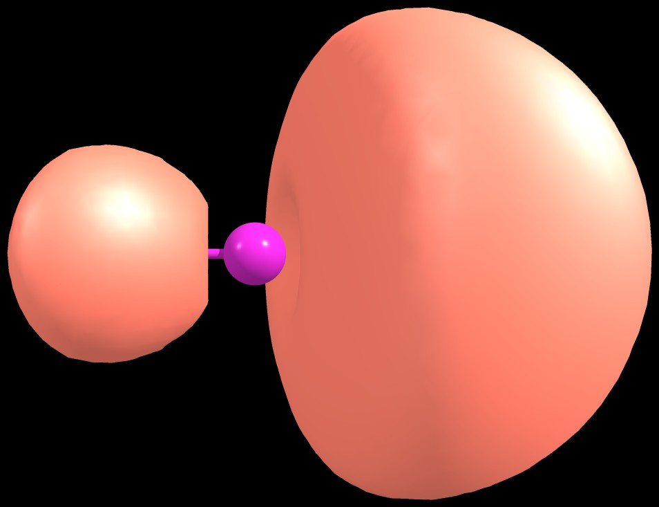
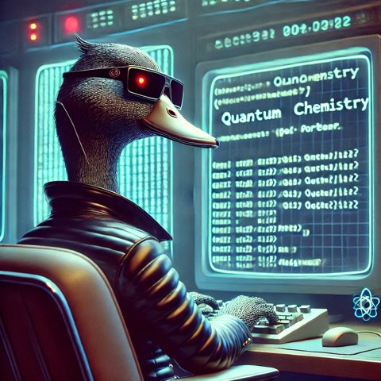

ReRDMFT
Relativistic reduced density matrix functional theory in C++17, with OpenMP. Includes a four-component Dirac-Hartree-Fock SCF, an approximate X2C-HF SCF, and a nonrelativistic Hartree-Fock SCF for comparison. Part of the ReReDMFT project.
Relativistic reduced density matrix functional theory in C++17, with OpenMP. Includes a four-component Dirac-Hartree-Fock SCF, an approximate X2C-HF SCF, and a nonrelativistic Hartree-Fock SCF for comparison. Part of the ReReDMFT project.

C++ and OpenMP implementation of several density operations: information-theory quantities, density evaluations and overlap integrals. Reads .wfn, .wfx or .fchk files from Gaussian, GAMESS, DoNOF and others.
C++ with OpenMP and MPI. Computes intracule and extracule densities and the total position spread.
Modern Fortran module for independent RDMFT/NOFT calculations. It needs only an initialization step and a subroutine that computes molecular-orbital integrals for given natural-orbital coefficients. Archived on Zenodo.
C++ implementation of the analytic solutions for the singlet and triplet two-electron harmonium atom: DM1, DM2, density, wave function, intracule and extracule functions. Contact me for access.
Many-body perturbation theory for molecules, developed by Dr. F. Bruneval. I added WFN-file output, double-hybrid Kohn-Sham functionals, electric fields, a link to the standalone DoNOF code (RDMFT/NOFT/pCCD) and the X2C approximation.
Plane-wave code for solids and extended systems. I implemented a linearized GW correction to the Kohn-Sham first-order reduced density matrix.
RDMFT/NOFT for molecules, developed by Dr. M. Piris. I developed MBPT corrections, in particular RPA for the NOF-c-RPA method.
GW/BSE for molecules, developed by Dr. I. Duchemin. I developed an MM embedding scheme based on MESCAL.

MBPT for molecules, developed by Dr. P.-F. Loos. I implemented Hartree-Fock-Bogoliubov and a linearized GW correction to the Gorkov reduced density matrix.
Library for many-body Green's functions on HPC, part of the NOMAD project. I implemented sine frequency-to-time weights for Fourier transforms such as G(iω) to G(it).